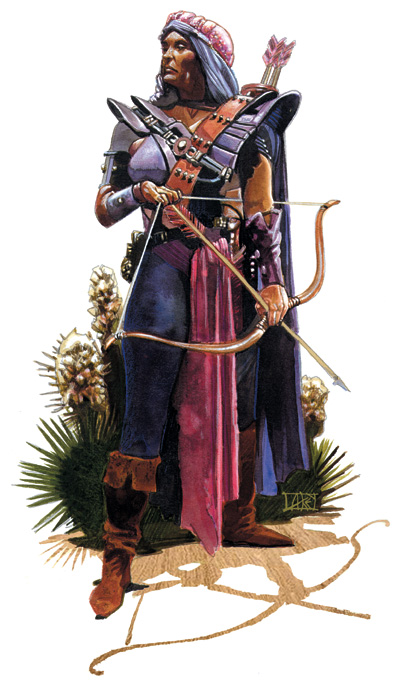

大地旅者在多元宇宙不停穿梭，踏足世上每个最危险的角落。而随着旅行，她们也渐渐熟悉了各种自然环境，并与脚下的大地建立起神秘的联系。但是，大地旅者却绝不会被哪个地域束缚，她们的脚步永不停歇，不断向着地平线的远方前进，新的冒险正在那里等着她们。
很少有什么事情会让大地旅者感到意外，她们在旅程中早已见识过无数令人惊异的奇景。大地旅者通常性格外向，常常向同伴谈起自己曾经“到过哪里，干过什么。” 她们通常都旅行成瘾，因此常常会在旅程还没结束时就开始策划下一次的行动。由于大地旅者能与周围的环境产生魔法共鸣，因此他们都是相当优秀的向导和斥候。而当团队遭遇到危险时，他们也能够把对地貌的了解运用到战斗之中，从而成为出色的战斗力量。
巡林客和吟游诗人常常会成为大地旅者，这是由于他们欣赏一名漫游者的人生，而并不是钦慕大地旅者的力量。还有些大地旅者是离开家园的野蛮人以及旅行的游荡者，甚至少量的督依德教徒也会选择这条进阶道路，当然，这需要牺牲他们施展法术的能力。
玩家可能会发现大地旅者走在乡间小径，或是在荆棘从中开辟新的道路。他们很少在同一地点待上过长的时间，而总是渴求出发进行新的冒险～对于大地旅者而言，越是偏远怪异的地方，就越是刺激有趣。

生命骰：d8
进阶要求：
想要进阶一名大地旅者，角色必须满足下述条件：
技能：知识（地理）8级
专长：坚韧
本职技能（以及技能的关键属性）：平衡（敏捷），攀爬（力量），交涉（魅力），驯养动物（魅力），躲藏（敏捷），知识（地理）（智力），聆听（感知），潜行（敏捷），专业（感知），骑乘（敏捷），语言（无），侦察（感知）以及野外求生（感知）。技能的详细说明，请参见玩家手册第四章。
每等级技能点数：4+智力调整值
表6-12 大地旅者
等级 基本攻击加值 坚韧豁免 反射豁免 意志豁免 特殊
1 +1 +2 +0 +0 熟知地貌
2 +2 +3 +0 +0 熟知地貌
3 +3 +3 +1 +1 熟知地貌
4 +4 +4 +1 +1 熟知地貌
5 +5 +4 +1 +1 熟知地貌
6 +6 +5 +2 +2 熟知界域地貌
7 +7 +5 +2 +2 熟知界域地貌
8 +8 +6 +2 +2 熟知界域地貌
9 +9 +6 +3 +3 熟知界域地貌
10 +10 +7 +3 +3 熟知界域地貌
职业特性：
擅长武器及防具：大地旅者不擅长任何武器或防具。
熟知地貌（Terrain Mastery）：随着大地旅者的旅行，他们能与大地之间建立神秘的魔法联系。每次升级时，大地旅者可以从地貌列表中选择一种作为自己的熟知地貌。每种地貌都有相关的常见活动，而大地旅者可以在进行此类检定时获得额外的奖励，或是获得其他相当的奖励。另外，由于大地旅者熟知各种地貌上的危险，因此在对抗自己熟知地貌所特有的生物时，攻击骰和伤害骰获得+1的奖励。生物的地形归属，详细见怪物图鉴中的相关说明，大地旅者只有在对抗有地形属性的生物时，才能获得本奖励。
大地旅者的地貌奖励不倚赖于自己所处的环境，在任何环境下，他们都能保留由熟知地貌所获得的各种奖励。例如，一名选择了沙漠环境作为自己熟知地貌的大地旅者，即使处在地城中也不会感到疲乏。
熟知界域地形（Planar Terrain Mastery）：大地旅者对地貌的熟悉最终能扩展到整个多元宇宙。熟知界域地貌与熟知地貌类似，但需从界域地貌中选择。大地旅者可以选择熟知非界域地貌取代熟知界域地貌。
地貌奖励
水中环境：角色善于在水中活动，因此在游泳检定上获得+4的奖励。若角色有水中速度，则可以选择获得+10尺的水中速度奖励。同时，角色在对抗水生生物时在攻击骰和伤害骰上获得+1的奖励。
沙漠环境：角色善于保存体内的各种资源，因此能在极度严苛的环境下挣扎求存。角色对疲乏效果免疫，而任何能使角色感到“筋疲力尽”的效果，只能使角色感到疲乏。同时，角色在对抗沙漠生物时，在攻击骰和伤害骰上获得+1的奖励。
森林环境：角色长久居住森林中，感官变得更加敏锐，因此在躲藏检定上获得+4的奖励。同时，角色在对抗森林生物时，在攻击骰和伤害骰上获得+1的奖励。
丘陵环境：角色能够听到微弱的回声，因此在聆听检定上获得+4的奖励。同时，角色在对抗丘陵生物时，在攻击骰和伤害骰上获得+1的奖励。
沼泽环境：角色善于安静地快速前行，这种与沼泽的神秘联系能使角色在潜行检定上获得+4的奖励。同时，角色在对抗沼泽生物时，在攻击骰和伤害骰上获得+1的奖励。
山地环境：角色善于在山岩间攀援，因此在攀爬检定上获得+4的奖励。同时，角色在对抗山地生物时，在攻击骰和伤害骰上获得+1的奖励。
平原环境：平原宽阔的视野，锻炼了角色的眼力，因此在侦察检定上获得+4的奖励。同时，角色在对抗平原生物时，在攻击骰和伤害骰上获得+1的奖励。
地底环境：角色通过魔法手段适应了地底的黑暗，因此获得60尺黑暗视觉。已经拥有黑暗视觉的角色，黑暗视觉的范围增至120尺。同时，角色在对抗地底生物时，在攻击骰和伤害骰上获得+1的奖励。
焦炎环境（界域）：熟知焦炎环境的角色可以获得20点火焰抗力。同时，角色在对抗火焰亚种的外界生物或是元素时，在攻击骰和伤害骰上获得+1的奖励。
失重环境（界域）：角色在无重力环境，诸如气元素位面或是星界时，飞行速度获得+30尺的奖励。同时，角色在对抗气元素位面生物，星界生物以及以太位面生物时，在攻击骰和伤害骰上获得+1的奖励。
严寒环境（界域）：熟知严寒环境的角色可以获得20点寒冷抗力。同时，角色在对抗寒冰亚种的外界生物或是元素时，在攻击骰和伤害骰上获得+1的奖励。
变幻环境（界域）：角色善于在不断变幻的环境中穿梭自如，例如混沌海或是阴影位面。角色精通变幻的本质，因此可以更迅速地抵达目的地。角色每1d4轮可以施展相当于法术“任意门”的类法术能力，施法者等级等同于角色的职业等级。同时，角色在对抗以变幻环境为家的外界生物或是元素（例如，撒拉蟾或幽影獒犬）时，在攻击骰和伤害骰上获得+1的奖励。
阵营环境（界域）：角色善于用魔法模拟所在位面的阵营，因此不承受阵营惩罚。同时，伤害相对阵营的魔法以及其他效果（如邪影击）不能影响角色。本能力仅影响与阵营相关的魔法，而并不会改变角色的行为方式，或是其他与阵营相关的职业特性。
空穴环境（界域）：角色获得30尺震颤感觉。
其他（界域）：若战役使用城主自行设计的宇宙观（见创建宇宙，本书第167页），则可以添加额外的界域地貌奖励。例如，若城主设计的位面是个毒虫海洋，上面平铺有黑色蜘蛛网，那么熟知本界域地貌的大地旅者可能会在平衡检定上获得+4的奖励，同时在对抗毒素时，在坚韧检定上获得+4的奖励。